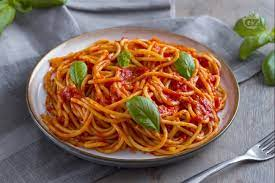

Pasta al Pomodoro

Ricetta Pasta al pomodoro
Un piatto simbolo della cucina italiana,
con i tipici ingredienti del Bel Paese: spaghetti al pomodoro e basilico.
Eccoci ai fornelli insieme a voi per suggerirvi la nostra ricetta di questo classico intramontabile: una cottura lenta e dolce dei pomodori
pelati e il profumo delle foglioline di basilico fresche sono tra i suggerimenti per un sicuro successo!
Ingredienti
- Pasta
- Pomodoro
- Olio quanto basta
- Sale fino
- basilico
Passaggi
- Per preparare gli spaghetti al pomodoro cominciate dalla preparazione della salsa.
- così potrete eliminare l’anima per rendere il profumo più delicato.
Dopo 2 minuti di cottura a fiamma viva, unite i pomodori pelati
- Coprite con un coperchio e fate cuocere per almeno 1 ora a fuoco molto basso: il sugo dovrà sobbollire dolcemente
- Mescolate di tanto in tanto. Trascorso il tempo indicato, eliminate l’aglio
- e passate i pomodori al passaverdure
- Accendete il fuoco molto basso e aggiungete le foglie di basilico